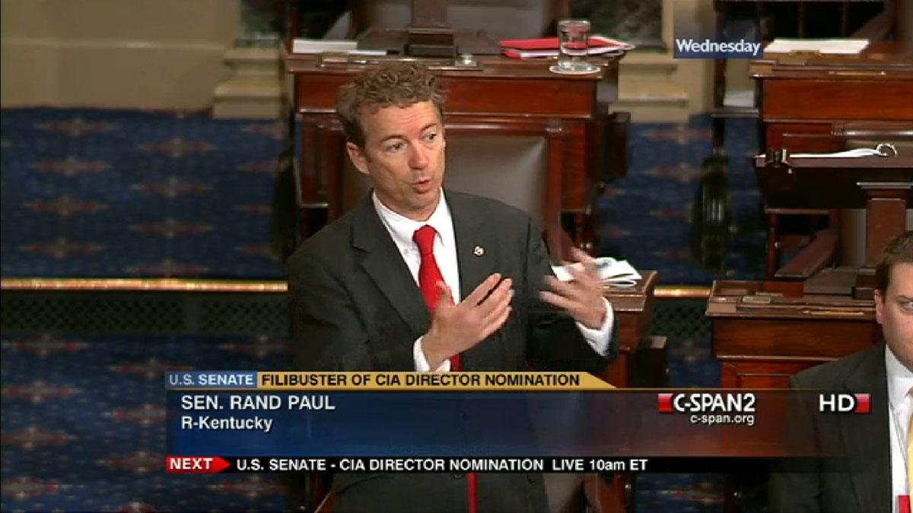

The Senate has unique rules that set it apart from the House. It was known as the “gentlemen’s club,” since it had very informal rules. Rules were considered as gentlemen’s agreements (very informal) to behave civilly and graciously. This has changed in the past ten years.
The Senate’s tradition of filibuster, the use of unlimited debate as a blocking technique, dates back to 1790 and has been used over the years to frustrate the passage of bills. , does not set rules for how long a person may speak during a debate. This creates the possibility of a filibuster, an attempt to “kill” a bill by stalling to prevent the vote from taking place. A filibuster aims to wear out a bill’s proponents so they give up or change the bill. It takes 60 senators to invoke cloture to end a filibuster. Senate rules, however, can be changed by a simple majority vote. It’s possible, therefore, to limit or abolish the filibuster by a majority vote. The threat of ending filibuster through a rules change has been dubbed the nuclear option.
Due to frustrations with the filibuster, in 1912, the Senate added a rule called cloture (KLOH-chur), which may end a filibuster. If a supermajority of 60 senators vote to invoke cloture, the Senate may spend at most 30 more hours considering a bill before it goes to a vote. However, senators may need help invoking cloture. Imagine a bill with the support of 51 senators, and 49 senators oppose it. If at least eight opposing senators refuse to end the debate, the Senate will not get the required 60 votes for cloture.
